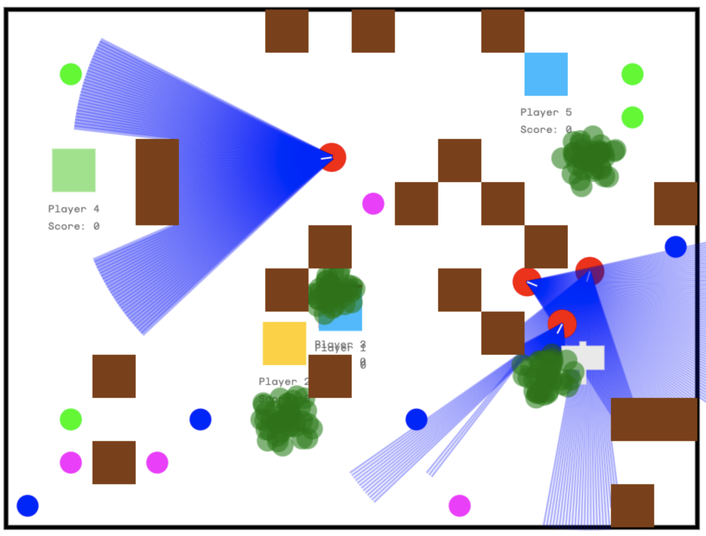
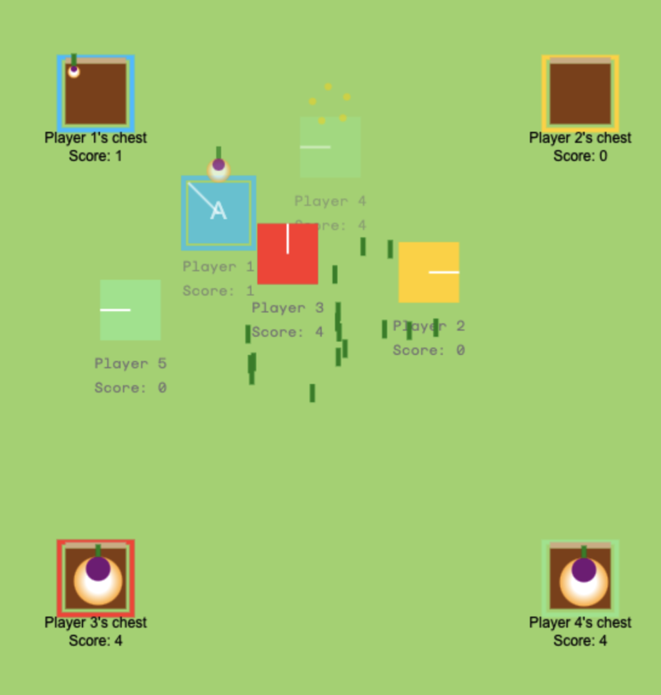

Minigame Prototypes
I'm making a course about how to make multiplayer online games.
To decide which minigame I teach in the course, I've prototyped 3 minigames, and I would love to hear your feedback on how fun you find them. I'll let you know which one wins!
2. Gnome Heist

- Pick up plants to gain points
- Avoid being seen by gnomes for too long, or you'll be respawned
- Use bushes or obstacles to hide from gnomes
Controls:
- Left analog stick: move
- HOLD bottom button: pick up plant
Play Gnome Heist
3. Turnip Tussle

- Pick up turnips and bring them to your chest to win points
- Headbutt other players to stun them and make them drop their turnip
Controls:
- Left analog stick: move
- HOLD: Pick up and carry Turnip
- Headbutt
Play Turnip Tussle
Other
Are the controllers acting up? Check their status using this website: hardwaretester.com/gamepad